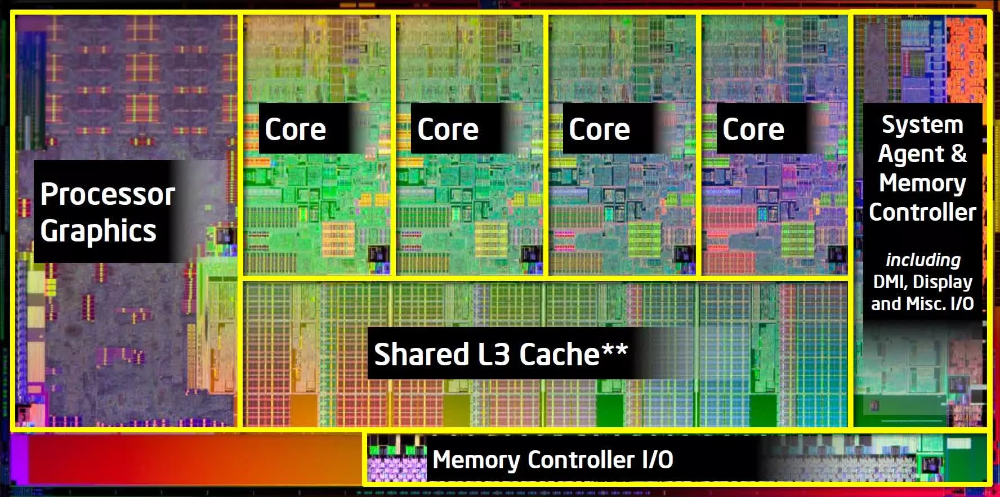

Recall the prescription for adaptive Dormand-Prince Runge-Kutta 5(4)th order method:
One challenge of an adaptive integration method is that you often can't predict where the points will be located. It becomes annoying when you want to evaluate the unknown function at some exact point $x$.
Dense output is a way to carry out interpolation as the integration goes on. It can make use of estimates of the derivative $k_i$ during the integration to do interpolation, making it more accurate and efficient.
For example, say you would like to evaluate the unknown function at $x = x_n + \theta h$, where $0<\theta<1$. One can use an interpolation polynomial such as: $$ y(x_n + \theta h) = (1 - \theta) y_n + \theta y_{n+1} $$
This is a linear interpolation, which is 1st order accurate. It doesn't use any information about the derivatives at the endpoints.
This is an example of a higher order interpolation polynomial that makes use of the derivatives at the endpoints:
$$ \begin{split} y(x_n + \theta h) &= (1-\theta)y_n + \theta y_{n+1} + \\ &\quad \theta(\theta - 1)\left[(1 - 2\theta)(y_{n+1} - y_n) + (\theta - 1)hf_n + \theta h f_{n+1}\right] \end{split} $$This gives a 3rd order interpolation polynomial. The coefficients are known during the integration, so it's easy to evaluate the function at any point between $x_n$ and $x_{n+1}$.
For the Dormand-Prince method, a 4th order interpolation method can be implemented using the intermediate derivatives $k_i$:
$$ \mathbf{y}(x_n + \theta h) = \mathbf{r}_1 + \theta(\mathbf{r}_2 + (1 - \theta)(\mathbf{r}_3 + \theta(\mathbf{r}_4 + (1 - \theta) \mathbf{r}_5))) $$where $$ \begin{split} \mathbf{r}_1 &= \mathbf{y}_n,\quad \mathbf{r}_2 = \mathbf{y}_{n+1} - \mathbf{y}_n, \\ \mathbf{r}_3 &= \mathbf{y}_n + h\mathbf{k}_1 - \mathbf{y}_{n+1},\quad \mathbf{r}_4 = 2(\mathbf{y}_{n+1} - \mathbf{y}_n) - h(\mathbf{k}_1 + \mathbf{k}_7), \\ \mathbf{r}_5 &= h(d_1 \mathbf{k}_1 + d_3 \mathbf{k}_3 + d_4 \mathbf{k}_4 + d_5 \mathbf{k}_5 + d_6 \mathbf{k}_6 + d_7 \mathbf{k}_7) \end{split} $$
The $d_i$ coefficients for the DP45 method are: $$ \begin{split} d1 &= -12715105075.0/11282082432.0, \\ d3 &= 87487479700.0/32700410799.0, \\ d4 &= -10690763975.0/1880347072.0, \\ d5 &= 701980252875.0/199316789632.0, \\ d6 &= -1453857185.0/822651844.0, \\ d7 &= 69997945.0/29380423.0 \end{split} $$
When implementing dense output, the integrate method
needs to be given an array of points $\{x_i\}$ where we want the
results to be evaluated. Then, at each integration step, after we
decided to keep the result, we go through the points in $\{x_i\}$ that
lie between $x_n$ and $x_{n+1}$. For each point, we evaluate the
intermediate values $y(x)$ using the interpolation polynomial.
Embedded methods such as DP45 often comes with a native interpolation scheme that is as accurate as the lower order estimate, using the derivatives evaluated in the intermediate steps.
So far, we have not discuss when to end the integration. The simplest way is starting from $x_0$, and integrate until you hit $x_\mathrm{end}$.
However, there are many situations where you don't know exactly where to stop. For example, you might be integrating a trajectory of an object, and you want to stop when it hits the ground, but it's not known in advance where that will be.
It is good practice to implement a custom stop condition and pass it to the integrator. The integrator will check the stop condition at each successful step, and stop if the condition is met.
// Example of a stop condition that stops when y[1] (height) goes below 0
auto stop_condition = [](double x, const std::vector<double>& y) {
return y[1] <= 0;
};
There is an even better version of the Dormand-Prince method that has 8th order accuracy with 12 evaluations of $f$. It has two embedded methods, one 5th order and one 3rd order. The coefficients of this method are included in an appendix of Numerical Recipes (3rd Edition).
The error estimate is:
$$ \mathrm{err} = \mathrm{err_5}\frac{\mathrm{err_5}}{\sqrt{0.01(\mathrm{err_3})^2 + (\mathrm{err_5})^2}} $$This is often called the 853 method, and implemented in most
software packages. For example, there is scipy.integrate.DOP853.
The method uses a combination of the 3 different estimates to construct a 7th order interpolation for dense output.
Modern CPUs have multiple cores. How to make use of them?
There are different levels of parallelization:
Vectorization used to be called "SIMD" (Same Instruction Multiple Data). Depending on the CPU instruction set, it can work on a set of floating point numbers at the same time. For example, the Intel AVX-512 instruction set has the following intrinsic functions:
__m512d _mm512_load_pd (void const* mem_addr)
__m512d _mm512_add_pd (__m512d a, __m512d b)
void _mm512_store_pd (void* mem_addr, __m512d a)
You can find the official guide here.
Vectorization is now often done automatically by the compiler. Simple for
loops often can be automatically be vectorized. This is partly what
makes code compiled with the -O3 flag significantly faster.
For very specific applications, you may need to write the intrinsics directly. Such level of fine-tuning can be very challenging.
For parallelization over multiple CPU cores on the same machine, a model using "threads" is often used.
Each thread executes its instructions sequentially. Everything you have written in this course has been single-threaded.
With Hyperthreading, each modern CPU core can technically execute up to 2 threads simultaneously. However, when the workload of each thread is high, each physical core will be saturated by one thread. It is better to use the full capacity of each core by using one thread per core.
There are 2 main ways to achieve multi-threading in C++:
OpenMP is a set of compiler directives that can parallelize code automatically.
#include <print>
#include <omp.h>
int main() {
#pragma omp parallel for
for (int i = 0; i < 10; i++) {
std::println("{}", i);
}
return 0;
}
This needs to be compiled with the -fopenmp flag.
A possible output of the above program is:
4
0
3
1
9
2
6
5
7
8
By default, OpenMP often utilizes all available cores on the system by launching the same number of threads. You can control the number of threads used with an environment variable:
OMP_NUM_THREADS=4 ./a.out
If you set OMP_NUM_THREADS=1 then it will carry out
the loop serially in one single thread, without any parallelization.
OpenMP is often the go-to way to parallelize scientific programs in
a shared-memory setting (e.g. a multi-core computer). Scientific programs often
rely heavily on predictable for loops, which is where OpenMP
excels.
Low level threading works the best with parallel tasks that may not be
as simple as a for loop. For exampling, loading a large
file in the background.
When multiple threads access the same memory location, there is no guarantee which thread will access it first, making the outcome non-deterministic.
Ways to avoid race conditions include:
omp_get_num_threads() and
using the thread ID to access the correct memory location.
critical directive to ensure that only one thread
can access a block of code at a time:
int n = 0;
#pragma omp parallel for
for (int i = 0; i < 10; i++) {
#pragma omp critical
n += 1;
}
gitFor the group project 1, you will be using git to
collaborate. The workflow for multiple collaborators is slightly
different from your usual single-person workflow.
gitAlways git pull before git push.
Someone else might have pushed to the GitHub online repository. If that is true, you will not be allowed to push to it. You will first need to incorporate their commits to your own repository.
VS Code does this for you if you click on the
"Synchronize" button.
gitThe first time you pull and there are other people's commits, you
may see an error message from git not knowing how to
handle it. You need to run one of the two following commands:
git config --global pull.rebase falsegit config --global pull.rebase trueThe first option is usually the default behavior. Under this option, every time you pull someone else's commits while you have your own commits, a "merge" commit will be generated.
The second option skips this merge commit, but conflict handling can be a bit more annoying. See a guide here
gitTry to work on different files, or different sections of the same file.
git is usually very good at figuring out who did
what and merging those changes together. The exception is when two
people changed the same line. Then git will have no
idea whose version to use, and you will need to resolve the conflict by hand.
Add the file after you solve the conflict, then commit it. It will generate a merge commit.